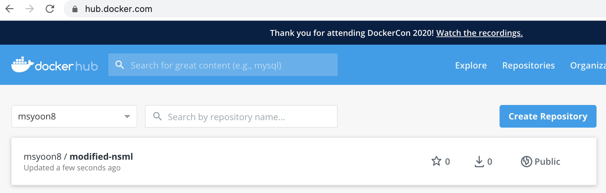

Docker 컨테이너 Commit하고 Push하기
NSML 을 인턴 기간 중 사용하게 되면서 docker image를 띄우고, 컨테이너에 넣어서 수정하고, 다시 push해야하는 일이 생겼다. 나중에 까먹지 않도록, 각자 과정에 대해서 간단하게 기록해보려고 한다.
기본적으로 docker run을 하게 되면 해당 container안에 있는 process가 다 돌아가게 되면 container는 exit하게 되고, 그 후에 다시 그 container를 run시킨다면 그 전에 작업했던 결과물들이 다 날라가게 된다(초기의 값으로 돌아가게 된다 TT)
따라서 나는 docker run -it [CONTAINER_NAME] [COMMAND(보통 /bin/bash)] 로 처음에 실행해놓은 docker를 exit 시키지 않고 그 쉘은 작업이 끝날때까지 놔둔다…ㅎㅎ
- 현재 돌고 있는 Container 확인:
docker ps -al
user@AL01333530 ~ % docker ps -al
CONTAINER ID IMAGE COMMAND CREATED STATUS PORTS NAMES
6eb43f8766c0 msyoon8/fairseq-nsml "/bin/bash" 8 hours ago Up 8 hours sad_buck
- 해당 container “commit” 하기:
docker commit [CONTAINER_NAME] [NEW_IMAGE_NAME]
user@AL01333530 ~ % docker commit sad_buck modified-nsml
sha256:59e86dfa8921492b020d0d258d05c47f0049e35141c291fe6e38cde645ee0fed
- 만들어진 docker image 확인:
docker images를 하면 된다.
user@AL01333530 ~ % docker images
REPOSITORY TAG IMAGE ID CREATED SIZE
modified-nsml latest 59e86dfa8921 About a minute ago 11GB
msyoon8/new-nsml latest 106f53376a55 8 hours ago 11GB
start latest 7789300f795a 8 hours ago 10.9GB
msyoon8/fairseq-nsml latest 7789300f795a 8 hours ago 10.9GB
<none> <none> 34ad76557739 9 hours ago 110MB
python alpine bcf3965d8456 4 days ago 80.3MB
node 12-alpine 18f4bc975732 6 days ago 89.3MB
nginx alpine ecd67fe340f9 3 weeks ago 21.6MB
msyoon8/nsml start d4cb5f857197 12 months ago 7.28GB
nsml/ml cuda9.0-cudnn7-tf-1.11torch1.0keras2.2 d4cb5f857197 12 months ago 7.28GB
(예시입니다)
-
docker login하기 (나는 했으므로 pass) -
docker image에 tag 달기:
docker image tag [NEW_IMAGE_NAME]:latest [USER_NAME]/[NEW_IMAGE_NAME]:[WANTED_TAG].
user@AL01333530 ~ % docker image tag modified-nsml:latest msyoon8/modified-nsml:start
user@AL01333530 ~ % docker images
REPOSITORY TAG IMAGE ID CREATED SIZE
msyoon8/modified-nsml start 59e86dfa8921 5 minutes ago 11GB
modified-nsml latest 59e86dfa8921 5 minutes ago 11GB
...
(참고: docker image tag를 지우고 싶다면 docker rmi [IMAGE_NAME]:[TAG] -> actual image를 지우는건 아님)
- docker hub에 push:
docker push [USER_NAME]/[IMAGE_NAME]:[TAG]
user@AL01333530 ~ % docker push msyoon8/modified-nsml:start
The push refers to repository [docker.io/msyoon8/modified-nsml]
29f8768524e6: Pushing [==================================================>] 24.02MB
345828a8dc7c: Mounted from msyoon8/new-nsml
4acf1ac205fc: Mounted from msyoon8/new-nsml
36bc5cc3b649: Mounted from msyoon8/new-nsml
8f4ebc5eb43a: Mounted from msyoon8/new-nsml
ebd4ce6c3d15: Waiting
59535ac5fd47: Waiting
2b023f1e40f7: Waiting
55a5c5838665: Waiting
68297ea5d26b: Waiting
6c0a7acf624e: Waiting
6c5aa0fe4fdd: Waiting
19021c46eb92: Waiting
01f46e800c43: Waiting
92d3f22d44f3: Waiting
시간이 조금 지나고 …..
user@AL01333530 ~ % docker push msyoon8/modified-nsml:start
The push refers to repository [docker.io/msyoon8/modified-nsml]
29f8768524e6: Pushed
345828a8dc7c: Mounted from msyoon8/new-nsml
4acf1ac205fc: Mounted from msyoon8/new-nsml
36bc5cc3b649: Mounted from msyoon8/new-nsml
8f4ebc5eb43a: Mounted from msyoon8/new-nsml
ebd4ce6c3d15: Mounted from msyoon8/new-nsml
59535ac5fd47: Mounted from msyoon8/new-nsml
2b023f1e40f7: Mounted from msyoon8/new-nsml
55a5c5838665: Mounted from msyoon8/new-nsml
68297ea5d26b: Mounted from msyoon8/new-nsml
6c0a7acf624e: Mounted from msyoon8/new-nsml
6c5aa0fe4fdd: Mounted from msyoon8/new-nsml
19021c46eb92: Mounted from msyoon8/new-nsml
01f46e800c43: Mounted from msyoon8/new-nsml
92d3f22d44f3: Mounted from msyoon8/new-nsml
10e46f329a25: Mounted from msyoon8/new-nsml
24ab7de5faec: Mounted from msyoon8/new-nsml
1ea5a27b0484: Mounted from msyoon8/new-nsml
start: digest: sha256:126df160f8899f7bf0bb4c21a724d41e39239afe27084229f78c06bb67277dcd size: 4116
요렇게 뜨면 제대로 push가 된 것이다!  (docker hub에 제대로 push가 된 걸 볼 수 있다.)
쨘! 그리고 이 이미지를 가져오면 된다 ㅎㅎ